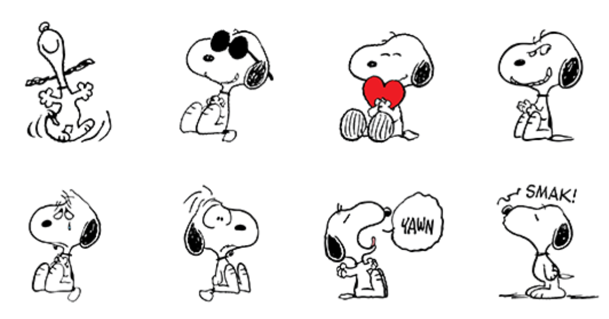

2 Part Test
Part 1. Can one LLM (ChatGPT 5) give an accurate description given a specific personality type?
Part 2. Can another LLM (Microsoft Copilot) predict the correct MBTI after feeding its descriptions back to itself?

What is MBTI?
MBTI stands for Myers-Briggs Type Indicator. It consists of a questionnaire to categorize people into 16 different “personality types”.
There are four key areas of focus:
There are 16 combinations total and those correspond to the 16 personality types, which are grouped into four larger divisions.
Analysts
Architect, Logician, Commander, Debater
Diplomats
Advocate, Mediator, Protagonist, Campaigner
Sentinals
Logistician, Defender, Executive, Consul
Explorers
Virtuoso, Adventurer, Entrepreneur, Entertainer
What is my MBTI and how will I prompt the LLM?
My MBTI is ISTJ, which means that I am a ’Logistician”.
Chat-GPT 5 Prompt:
Write a detailed description and outline traits of someone with an ISTJ MBTI.
Response
ISTJ Personality Overview
Type Code: Introverted • Sensing • Thinking • Judging
Nickname: The Inspector / The Duty Fulfiller
Core Drive: Responsibility, reliability, and upholding commitments.
Dominant Function: Introverted Sensing (Si) → relies on memory, routines, and trusted methods.
Auxiliary Function: Extraverted Thinking (Te) → focuses on efficiency, logic, and practical systems.
ISTJs are known for being grounded, dependable, and meticulous. They often feel a strong sense of duty to follow through on promises, meet obligations, and maintain stability. They like order, clarity, and practicality in their world.
Key Traits of ISTJs
Dependable & Responsible
Take obligations very seriously.
Known as people who can be counted on to deliver.
Detail-Oriented & Practical
Value concrete facts over abstract theories.
Notice small inconsistencies that others may miss.
Structured & Organized
Prefer planning ahead and sticking to schedules.
Thrive when rules, traditions, or systems are clearly defined.
Reserved but Steadfast
Introverted → private with emotions, not quick to open up.
Quietly dedicated rather than showy.
Logical & Objective
Make decisions based on facts and efficiency.
Less swayed by emotions unless they relate to their values/duty.
Traditional & Loyal
Respectful of rules, hierarchy, and established practices.
Value stability in relationships and careers.
Strengths
Extremely reliable and trustworthy.
Excellent memory for details and past experiences.
Strong work ethic and perseverance.
Clear sense of duty and responsibility.
Loyal to people, institutions, and commitments.
Challenges
Can be rigid or resistant to change.
May come across as too serious or unexpressive.
Struggle with abstract or highly theoretical ideas.
Sometimes prioritize duty over personal needs.
Risk being overly critical (of self and others).
Work Style
Prefer clear expectations and step-by-step tasks.
Thrive in structured environments (law, finance, medicine, government, military, engineering, etc.).
Excel in roles requiring accuracy, consistency, and reliability.
Relationships
Show love through dependability and practical actions, not always words.
Value long-term stability over spontaneity.
Loyal, steady, and protective of their commitments.
✨ In short: An ISTJ is the type of person who keeps the world running smoothly — grounded, diligent, and dependable, with a strong sense of tradition and order.
Reflection
This part is more of a validation step for the next part as well as an investigation into how well LLMs understand the nuances of different persoality types beyond what is just directly stated. in terms of validity, I do see myself in a lot of these descriptions (it is my personality type after all). The ones that especially stood out to me were ‘Challenges’, ‘Work Style’, ‘Relationships’. I think these were extremely on the nose. I think one thing in particular doesn’t necessarily fit: “Struggle with Abstract or Theoretical Ideas”, but I think for me, this is a skill that came with time. Additionally, it has been a while since I’ve gotten this result, so it is a possibility that I am no longer this “personality”
Extra Prompt (for fun)
Prompt: > Do you think that there are only 16 personalities?
ChatGPT 5 Response: > Not really — the idea of there being only 16 personalities comes from the Myers-Briggs Type Indicator (MBTI), which categorizes people based on four binary traits (Introvert/Extrovert, Intuitive/Sensing, Thinking/Feeling, Judging/Perceiving).
That framework produces 16 combinations, but:
- Human personality is far more complex.
- Traits exist on spectrums, not binaries.
- Two people of the “same type” can behave very differently depending on culture, upbringing, stress, etc.
- Other models (like the Big Five) treat personality as continuous dimensions (e.g., Openness, Conscientiousness, Extraversion, Agreeableness, Neuroticism), which allows for many more nuanced combinations.
- Neuroscience and psychology generally agree: personality is dynamic, not fixed — it shifts with age, experience, and context.
üëâ So while the ‚Äú16 personalities‚Äù model can be a fun and sometimes useful shorthand, it‚Äôs definitely an oversimplification of human diversity.
Would you like me to compare MBTI vs Big Five to show how they approach personality differently?
My Thoughts: I think it’s interesting how ChatGPT 5 was able to answer a question seemingly looking for an opinion. Additionally, I am surprised that it gave the answer “Not really”, because I was expecting it to deflect and give an answer in between two opinions, rather than leaning to one side. I am not sure how LLMs are programmed to act based on opinion-based questions, but I am intriguied that it took somewhat of a stance. I wonder how far its opinions will go?